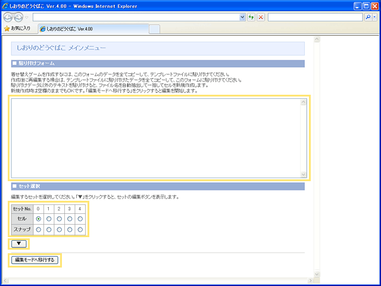
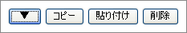
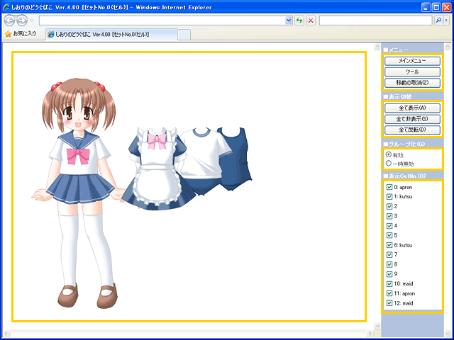
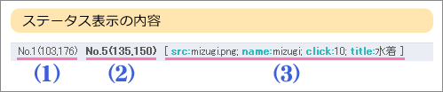
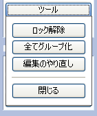
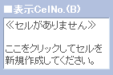
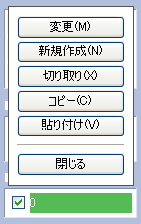
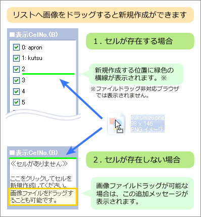
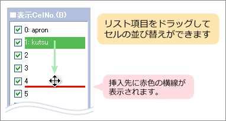

しおりのどうぐばこは、きせかえシステム"siori" 用の着せ替え作成ツールです。 tool.html をブラウザで開くとしおりのどうぐばこが起動され、メインメニューが表示されます。 編集中のデータが消えてしまいますので、再読み込みをしないようにご注意ください。

テンプレートファイルに貼り付けるデータが表示されます。 このフォームのデータをテンプレートファイルに貼り付けると、着せ替えが完成します。 完成後に再編集する場合は、テンプレートファイルに貼り付けしたデータを、このフォームに貼り付けます。
新規作成時のみ、ファイル名を含むテキスト（コマンドプロンプトのdirコマンドなど）を貼り付けることができます。 テキストを解析して画像ファイル名の自動抽出を行います。一括してセルを新規作成することが可能です。
ご注意： 貼り付けフォームに貼り付けるテキストは、基本的にご自身が作った貼り付けデータのみを使うことを強くおすすめします。 テキストに不正なJavaScriptが含まれているとセキュリティ上の危険があります。 他のテキストを使う場合は、そのような内容が含まれていないことを確認してからお使いください。
編集するセットを選択します。セットについての詳細はセットについてをご覧ください。 使用しているセット名は貼り付けデータに出力されますので、確認する場合はそちらをご覧ください。
クリックすると、下図のセット編集ボタンが表示されます。

セットをコピーする場合は、コピー元を選んで「コピー」、 貼り付け先を選んで「貼り付け」を押します。 セットを削除する場合は、削除したいセットを選んで「削除」を押します。 削除の取り消しはできませんので、ご注意ください。
貼り付け先にセットが存在する場合は、コピー元と貼り付け先両方で表示されているセルのみにコピーします。詳細は下記の通りです。
コピー元セットの表示セル 0,1,2,3 番 貼り付け先セットの表示セル 2,3,4 番 → 貼り付け先セットの 2,3 番のみに、データをコピーします。
この機能を使うと、貼り付け先セットの一部のセルだけをコピー元セットと揃えることができます。 普通に上書きコピーする場合は、貼り付け先のセットをあらかじめ削除してから貼り付けます。
選択したセットの編集を開始します。

セルの配置編集を行う画面です。この画面に表示されるセルをドラッグして配置します。 カーソルの上下左右キーで、動かしたセルを１ピクセル単位で微調整が可能です。 セルが重なって編集しにくい場合は、パネルやショートカットキーで表示状態を切り替える事ができます。
編集モードではブラウザのタイトルバーに現在編集中のセット名が表示され、セルを動かすと下部に次のステータスが表示されます。

(1) (2) … No.セル番号(横位置, 縦位置) を示します。
選択すると、下図のサブメニューを表示します。

「Ｇ」キーで交互に切り替えが可能です。
セルが存在しない場合は、下図のメッセージが表示されます。クリックするとセルを新規作成します。

セルが存在する場合は、セルのリスト項目が表示されます。チェックボックスで表示状態を切り替えできます。 「Ｂ」キーでもドラッグして動かしたセルの表示を切り替えることが可能です。 ロックされたセルのチェックボックスは操作不可となり、表示状態の切り替えはできません。
リスト項目をクリックすると、下図のセル編集メニューを表示します。

上記の各キーを押すと、ドラッグして動かしたセルに対して操作を実行することができます。 「変更(M)」「新規作成(N)」での情報入力については セルの情報入力について をご覧ください。
ファイルドラッグ機能が使用できるブラウザは、下図のように新規作成メッセージやリスト項目の上に画像ファイルをドラッグすると、 セルを新規作成することができます。画像ファイルは複数個まとめてドラッグが可能です。 但しドラッグできるのは、tool.html と同じフォルダにある画像のみとなります。

リスト項目をドラッグすると、下図のように項目の順番を並び替えることができます。 自動スクロール機能を備えていませんので、リスト項目が多くスクロールが必要な場合は、 ドラッグしながらマウスホイールを回してスクロールするなどの、やや変則的な操作が必要になります。 環境等により操作が困難な場合は、切り取りと貼り付けによる並び替えをご使用ください。
